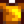

말린 불가사리
둘러보기로 가기
검색하러 가기
| 말린 불가사리 | |
| 태고의 바다에서 온 불가사리입니다. 유달리 상태가 매우 좋은 표본입니다! | |
| 정보 | |
| 유물 위치: | 해변 (10%) |
| 몬스터 드랍: | 없음 |
| 다른 획득처: | |
| 판매가격: | |
말린 불가사리는 해변의 유물 위치를 파내거나 낚시 보물 상자나 유물 상자에서 얻을 수 있는 유물입니다.
기부
이 아이템을 기부하면 박물관에 기부한 총 개수가 증가합니다.
선물
| 마을 주민 반응
| |
|---|---|
| 혐오함 | |
재단
이 아이템은 재봉틀에 사용해서 황금 셔츠를 만들 수 있습니다. 
퀘스트
물고기 연못 퀘스트 중 문어, 무지개송어, 통안어, 슈퍼해삼의 마리수가 5에서 7마리로 증가할 때 말린 불가사리 한개를 요구할 수도 있습니다.
연혁
| 유물 | |
|---|---|
| 유물 | 고대 검 • 고대 북 • 고대 씨앗 • 고대 인형 • 공룡알 • 깨진 암포라 • 꼬리 뼈 • 녹슨 숟가락 • 녹슨 징 • 녹슨 톱니바퀴 • 닭 동상 • 닻 • 드워프 도구 • 드워프 두루마리 I • 드워프 두루마리 II • 드워프 두루마리 III • 드워프 두루마리 IV • 드워프 투구 • 말린 불가사리 • 뼈피리 • 삼엽충 • 선사 시대 견갑골 • 선사 시대 경골 • 선사 시대 늑골 • 선사 시대 도구 • 선사 시대 두개골 • 선사 시대 손도끼 • 선사 시대 척추골 • 손 뼈 • 씹는 막대 • 야자 화석 • 앵무조개 화석 • 양서류 화석 • 엘프 장신구 • 유리 파편 • 이상한 인형 (노란색) • 이상한 인형 (녹색) • 화려한 부채 • 화살촉 • 황금 가면 • 황금 유물 • 희귀한 원반 |